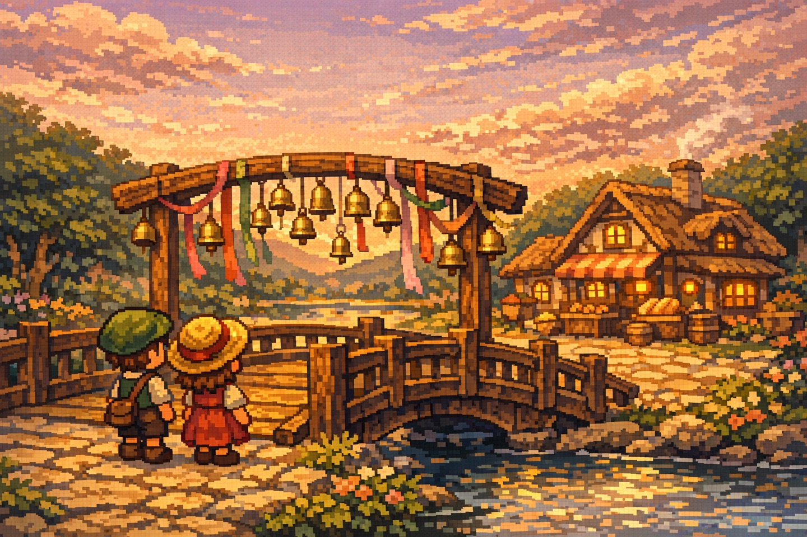

已导出本地主视觉：assets/images/cover-art.jpg
七日试玩 Demo
一份关于春风、桥铃和人与人慢慢靠近的田园像素小故事。现在已经可以完整体验风铃集会前后一周。

已导出本地主视觉：assets/images/cover-art.jpg
Public Demo 0.3
《雾铃小镇》是一款以“春日风铃集会”为主线的田园像素叙事小游戏。你不会被塞进很重的数值系统，而是通过和村民说话、帮忙、再在黄昏时去桥边听风，把这座小镇一点点走熟。
这一版对外试玩聚焦“被小镇接住”的感觉：从第一天初来乍到，到第七天真正站进人群里，节奏始终围绕关系、天气、桥边变化和一句终于响完整的话展开。
章节导览
自动存档会保留在当前浏览器。
跳转说明
当前试玩会自动存档。章节按钮可以回到已解锁天数的清晨开头。
章节列表
春日像素试玩
你会在七个游戏日里认识村民、完成小委托、看桥边慢慢变得热闹，最后走进风铃集会当天的黄昏。
完整体验第一周主线，从初到小镇一直走到风铃集会当天。
第一次建议按顺序慢慢走；回看时可以使用章节导览直接跳回已解锁天数。
增加了自动存档、章节进度、试玩总结和更适合发给别人直接体验的包装。
试玩会自动存档在当前浏览器，你随时可以回来继续。